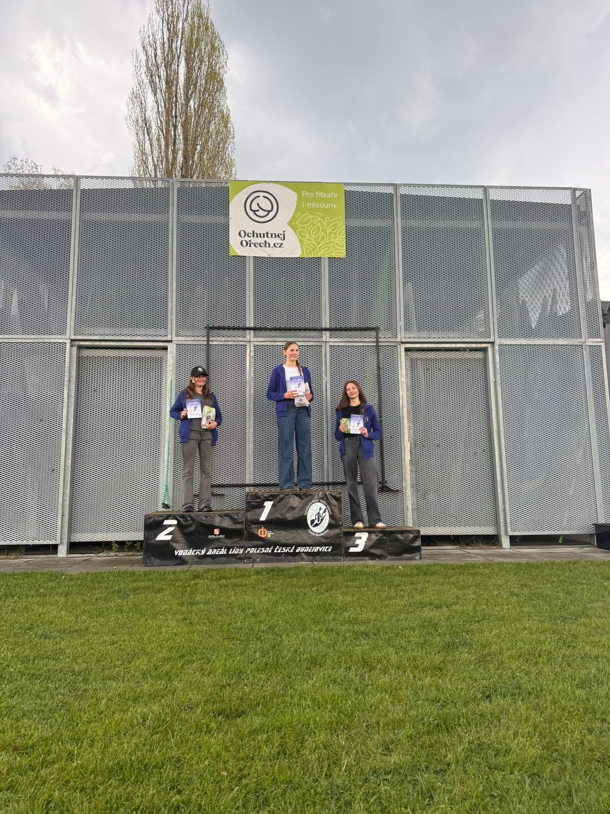

Nová sezóna odstartovala a pro závodníky z SKVS České Budějovice nemohla začít lépe. Tradiční Jarní slalomy, které se konaly 18. a 19. dubna 2026 v Areálu Lídy Polesné, přinesly domácímu klubu obrovskou radost. Závody jasně ukázaly nejen kvalitu naší špičky, ale také to, že systematická práce s dětmi a mládeží nese ovoce. Na start se totiž během víkendu postavilo téměř 40 závodníků SKVSČB – od těch nejmenších žáků sbírajících první zkušenosti až po ostřílené reprezentanty. Neděle navíc přinesla obrovské drama v podobě nominace na Olympiádu dětí a mládeže (ODM).
Elitní stálice a vládci singlkánoe
Hvězdy domácího klubu na úvod sezóny nenechaly nikoho na pochybách, že zimní příprava proběhla na jedničku. Obrovskou sílu ukázal klub především v mužské kategorii C1, kde naši borci obsadili hned dvě pódiová umístění:
- Václav Kuna: Na singlkánoi (C1M) předvedl naprostou dominanci. Zvítězil v sobotu a v neděli svůj triumf potvrdil, když trať prolétl a bral další absolutní první místo.
- Vilém Vlčnovský: Zdatně sekundoval Kunovi a v nabité kategorii C1 mužů předvedl vysoce stabilní a rychlé jízdy. Po oba dva závodní dny si na domácí trati dojel pro cenné 3. místo v absolutním pořadí .
Mezi ženami pak dominovaly další naše opory:
- Jana Matulková: Zaznamenala zlatý double na singlkánoi (C1Z), když vyhrála sobotní i nedělní závod. Výborně si vedla i na kajaku (K1Z), kde brala celkové prvenství v sobotu a skvělé druhé místo v neděli.
- Kateřina Švehlová: Opanovala nedělní závod kajakářek s absolutně nejrychlejším časem. Už v sobotu přitom ukázala sílu druhým místem v absolutním pořadí a 1. místem v kategorii U23.
Dravé mládí nastupuje a boj o Olympiádu
To, co však dělá Jarní slalomy skutečně výjimečnými, je pohled na mládežnické kategorie. SKVSČB vyslal na vodu obrovskou armádu talentů a výsledky jsou dechberoucí:
Dorostenci, kteří šokovali dospělé:
- Adam Rezek (DM): Ačkoli spadá do kategorie mladšího dorostu, v nedělním závodě na kajaku vyrazil všem dech. Porazil všechny dospělé muže a absolutně zvítězil.
- Martin Petr (DS): Ve stejném nedělním závodě K1M sekundoval Rezkovi a bral 2. místo celkově – 1. místo ve starším dorostu.
- Lenka Petrová (DM): Na kajaku v neděli excelovala – vyhrála kategorii mladšího dorostu a vyjela si fantastické 3. místo v absolutním pořadí.
Nominace na ODM: Nedělní závod měl pro vybrané mládežnické kategorie ještě jeden obrovský náboj – šlo o přímou nominaci na prestižní Olympiádu dětí a mládeže. S tlakem se naprosto fantasticky popasoval Matěj Krejčí, který v nedělním závodě singlkanoistů vybojoval celkové 2. místo, ovládl kategorii mladšího dorostu a s přehledem si tak zajistil nominační letenku na ODM.
O další nominační místo se pak strhla neskutečná bitva přímo mezi zástupci našeho klubu. O postup na Olympiádu si to rozdali Ondřej Sebastian Pinkava, Lukáš Chládek a Dan Drahokoupil. Z tohoto napínavého klubového derby nakonec vyšel vítězně právě Ondřej Sebastian Pinkava, který jízdu zvládl nejlépe a mohl se tak radovat ze zisku vytoužené nominace!
Silná generace a nejmladší naděje: O skvělé výkony se postarali i další jezdci.
Šimon Čihovský dvakrát ovládl kategorii U23 na C1M a pohyboval se v absolutní TOP 5.
Johana Štindlová zase dvakrát po sobě opanovala kategorii starších dorostenek na singlkánoi.
Závěrem bychom chtěli vyjádřit poděkování Jihočeskému kraji a statutárnímu městu České Budějovice. Jejich dlouhodobá podpora je pro náš klub i rozvoj vodního slalomu v regionu naprosto klíčová. Bez jejich přispění by nebylo možné organizovat závody na takové úrovni ani vytvářet tak kvalitní zázemí pro naši mládež. Děkujeme, že pomáháte plnit sportovní sny našich závodníků!

